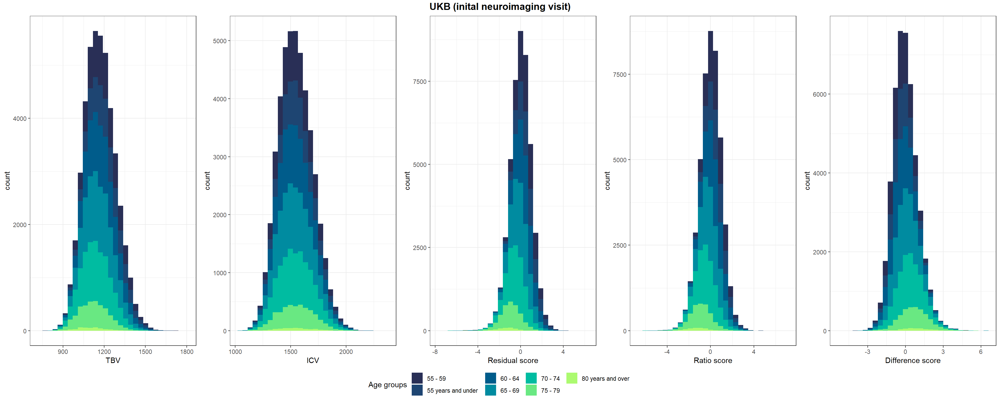
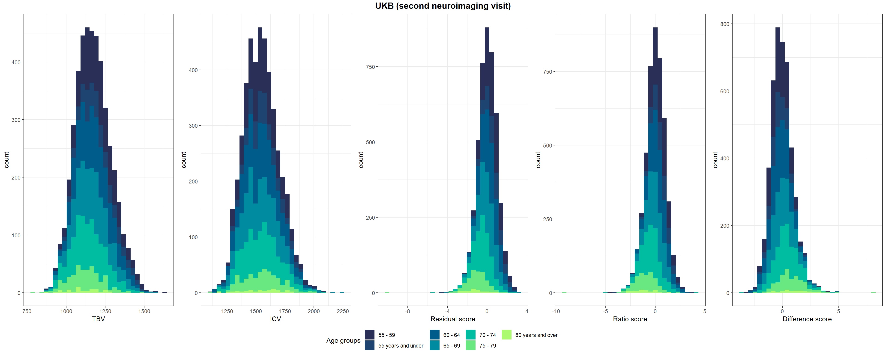
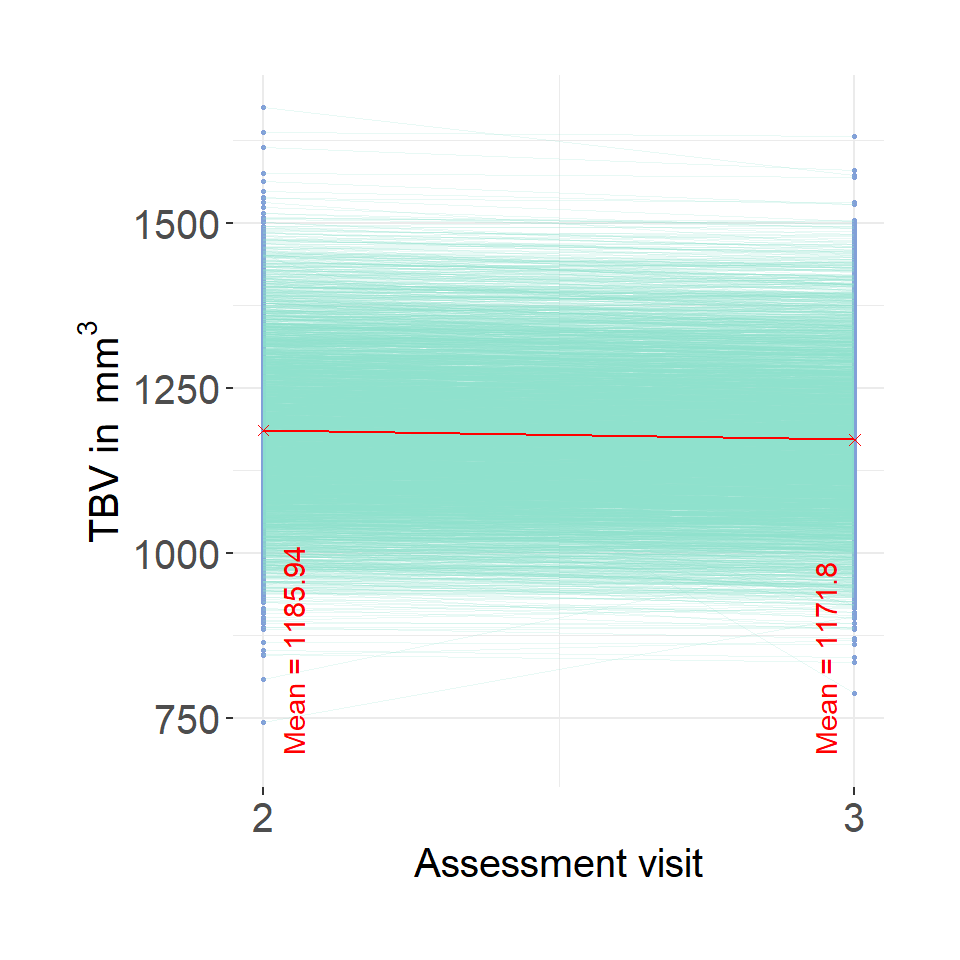
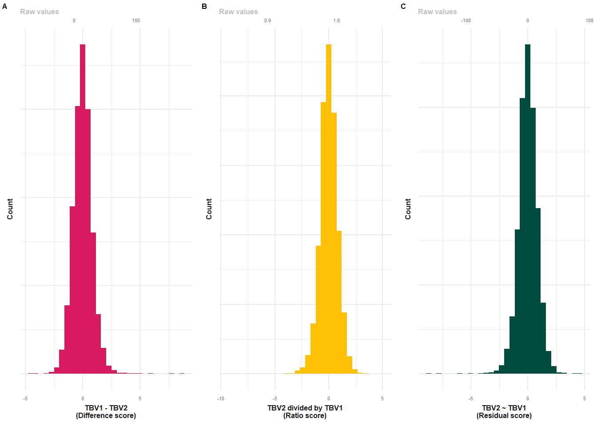

Code
library(data.table)
library(ggplot2)
library(ggpubr)
library(cowplot)Code displayed here was used to obtain neuroimaging measures: TBV, ICV, LBA (difference, ratio, residual scores).
Functions plot_hist and descriptives expect input data set to contain variables called diff, ratio, resid. plot_hist can also handle diff_stand, ratio_stand, resid_stand and will add an extra x-axis if input are standardised variables.
descriptives gives a table of descriptive statistics for TBV, ICV and LBA phenotypes.
plot_hist <- function(dat = dat, var = "diff_stand", split_sample_by = NULL){
# install packages if they don't already exits
packages = c("ggplot2","stringr", "tidyr", "dplyr")
install.packages(setdiff(packages, rownames(installed.packages())))
# load packages
library(ggplot2)
library(stringr)
library(tidyr)
library(dplyr)
# make sure input data is data.frame
dat = as.data.frame(dat)
# rename for simplicity
dat$var = dat[,var]
# calculate summary stats
df_stats <-
dat %>%
summarize(
mean = mean(var, na.rm=T),
median = median(var, na.rm=T)
) %>%
gather(key = Statistic, value = value, mean:median)
# calculate SD cutoffs
insert = c("+2 SDs", as.numeric(df_stats[which(df_stats$Statistic == "mean"), "value"]) + 2*sd(dat$var, na.rm=T))
df_stats <- rbind(df_stats, insert)
insert = c("-2 SDs", as.numeric(df_stats[which(df_stats$Statistic == "mean"), "value"]) - 2*sd(dat$var, na.rm=T))
df_stats <- rbind(df_stats, insert)
# format
df_stats$value <- as.numeric(df_stats$value)
# consider one-sided nature of cut-off
# if difference score, we use the upper 2 SD limit
# if ratio or residual score, we use the lower 2 SD limit
if(var == "diff" | var == "diff_stand"){
df_stats$value[which(df_stats$Statistic == "-2 SDs")]<-NA
# changed my mind, no need for median
df_stats <- df_stats[-which(df_stats$Statistic == "median"),]
# changed my mind, no need for mean either, it's just distracting
df_stats <- df_stats[-which(df_stats$Statistic == "mean"),]
}else if(var == "ratio" | var == "resid" | var == "ratio_stand" | var == "resid_stand"){
df_stats$value[which(df_stats$Statistic == "+2 SDs")]<-NA
# changed my mind, no need for median
df_stats <- df_stats[-which(df_stats$Statistic == "median"),]
# changed my mind, no need for mean either, it's just distracting
df_stats <- df_stats[-which(df_stats$Statistic == "mean"),]
}
# PLOT
# different output when there is a "sample" column
if(is.null(split_sample_by)){
plot = ggplot(dat, aes(x = var))+
geom_histogram(bins = 100, alpha = 0.5, fill = "#56B4E9")+
geom_vline(data = df_stats, aes(xintercept = value, color = Statistic), size = 0.5)+
xlab(var)+
ylab("Count")+
theme_bw()
}else if(!is.null(split_sample_by)){
if(length(which(names(dat) == split_sample_by)) == 0){
message(paste0("You have indicated that you wanted to group plotted values by ", split_sample_by,", but the data contains no such column.")); break
}
# incorporate grouping variable
names(dat)[which(names(dat) == split_sample_by)] = "split_sample_by"
# make sure its a factor
dat$split_sample_by = as.factor(dat$split_sample_by)
colors = c("#56B4E9","#009E73", "#E69F00") # "#79AC78" #grDevices::colors()[grep('gr(a|e)y', grDevices::colors(), invert = T)]
colors = colors[1:length(unique(dat$split_sample_by))]
plot = ggplot(dat)+
geom_histogram(aes(x = var, fill = split_sample_by), bins = 100, alpha = 0.5)+
scale_fill_manual(values = colors, name = split_sample_by)+
geom_vline(data = df_stats, aes(xintercept = value, color = Statistic), size = 0.5)+
xlab(var)+
ylab("Count")+
theme_bw()
}
# make second x-axis if we're working with standardised variables
if(length(grep("_stand", var)) != 0){
# calculate mean from original variable
varOr = str_remove(var, "_stand")
mean = mean(dat[,varOr], na.rm=T)
sd = sd(dat[,varOr], na.rm=T)
# add secondary x axis
plot = plot+
scale_x_continuous(sec.axis = sec_axis(name = "Raw values", trans=~.*sd+mean))
}
plot = plot+theme(panel.border = element_blank())
return(plot)
}
# this onyl works for the correct naming of the variable names to diff, ratio and resid
descriptives = function(samples = c("HCP", "Share", "both")){
# define statistics to include
stats = c("N", "TBV: Mean (SD)", "ICV: Mean (SD)", "cor(ICV,TBV)",
"*Difference score*", "Mean (SD)", "Median", "Range", "Variance", "Cut off",
"*Ratio score*", "Mean (SD)", "Median", "Range", "Variance", "Cut off",
"*Residual score*", "Mean (SD)", "Median", "Range", "Variance", "Cut off")
# object to hold results
res = as.data.frame(matrix(ncol = length(samples)+1, nrow = length(stats)))
names(res) = c("Statistic", samples)
res$Statistic = stats
for(i in samples){
# pull sample
dat = as.data.frame(get(i))
# N
N = sum(!is.na(dat$diff))
res[which(res$Statistic == "N"), which(names(res) == i)] = N
# TBV: Mean (SD)
mean = round(mean(dat$TBV, na.rm = T), digits = 2)
SD = signif(sd(dat$TBV, na.rm = T), digits = 2)
res[which(res$Statistic == "TBV: Mean (SD)"), which(names(res) == i)] = paste0(mean, " (", SD,")")
# ICV: Mean (SD)
mean = round(mean(dat$ICV, na.rm = T), digits = 2)
SD = signif(sd(dat$ICV, na.rm = T), digits = 2)
res[which(res$Statistic == "ICV: Mean (SD)"), which(names(res) == i)] = paste0(mean, " (", SD,")")
# ICV TBV correlation
cor = round(cor.test(dat$ICV, dat$TBV)$estimate, digits = 2)
res[which(res$Statistic == "cor(ICV,TBV)"), which(names(res) == i)] = cor
# Cycle through different scores
for(j in c("Difference", "Ratio", "Resid")){
# determine variable that matches the right score
if(j == "Difference"){
VarName = "diff"
}else if(j == "Ratio"){
VarName = "ratio"
}else if(j == "Resid"){
VarName = "resid"
}
dat$var = dat[,VarName]
### Calculate mean and SD
mean = round(mean(dat$var, na.rm=T), digits = 2)
sd = round(sd(dat$var, na.rm=T), digits = 2)
# find correct position in res to store result
index = grep(j, res$Statistic)
Cand = grep("Mean", res$Statistic)
pos = Cand[which(Cand > index)][1]
# store mean result
res[pos, which(names(res) == i)] = paste0(mean, " (", sd, ")")
### Calculate median
median = round(median(dat$var, na.rm=T), digits = 2)
#store median result
Cand = grep("Median", res$Statistic)
pos = Cand[which(Cand > index)][1]
res[pos, which(names(res) == i)] = median
### Calculate range
min = round(min(dat$var, na.rm = T), digits = 2)
max = round(max(dat$var, na.rm = T), digits = 2)
# store results
Cand = grep("Range", res$Statistic)
pos = Cand[which(Cand > index)][1]
res[pos, which(names(res) == i)] = paste0(min, " to ", max)
## Calculate variance
variance = signif(var(dat$var, na.rm = T), digit = 2)
# store variance result
Cand = grep("Variance", res$Statistic)
pos = Cand[which(Cand > index)][1]
res[pos, which(names(res) == i)] = variance
### calculate cut-off
if(j == "Difference"){
cutOff = mean(dat$var, na.rm = T)+(2*sd(dat$var, na.rm = T))
}else{
cutOff = mean(dat$var, na.rm = T)-(2*sd(dat$var, na.rm = T))
}
# store results
Cand = grep("Cut", res$Statistic)
pos = Cand[which(Cand > index)][1]
res[pos, which(names(res) == i)] = round(cutOff, digit = 1)
}
}
return(res)
}
# define function to make ggplots prettier
make_pretty <- function(){
theme(text = element_text(size=6),
axis.text.x = element_text(size=4, colour='#696969'),
axis.text.y = element_blank(),
plot.title = element_text(face="bold", colour='#1A1A1A', size=6, hjust = 0.5),
axis.title.x = element_text(face="bold", colour='#1A1A1A', size=6),
axis.title.y = element_text(face="bold", colour='#1A1A1A', size=6),
axis.line.x = element_blank(),
axis.line.y = element_blank(),
axis.ticks.x = element_blank(),
axis.ticks.y = element_blank(),
panel.border = element_blank(),
axis.title.x.top = element_text(color = "grey", size=6, hjust=0))
}Here we aggregate neuroimaging measures to calculate lifetime atrophy scores (ICV, TBV), in addition to CSF, and T1-scaling factor (N = 46836). This was the phenotypic input data for the GWAS.
##############################
# aim is to extract neuroimaging data for UKB from the IDP variables : ICV & TBV
# also add T1 volumetric scaling factor (field ID 25000) & CSF (field ID: 26527)
# downloaded N = 46836
file = fread(paste0(wd, list.files(path = wd, pattern = "RAP_download_08022024_neuro")))
names(file) = paste0("f.", names(file))
names(file) = gsub("-", "_", names(file), fixed = T)
# keep ID, 26515 & 26521
Cols = grepl("f.eid|f.26515_2.0|26521_2.0|f.25000_2|26527_2", names(file))
# select columns of interest
file = file[, ..Cols]
# name variables TBV and icv
names(file)[grep("f.26515", names(file))] = "TBV"
names(file)[grep("f.26521", names(file))] = "ICV"
names(file)[grep("f.25000", names(file))] = "T1ScalingFactor"
names(file)[grep("f.26527", names(file))] = "CSF"
#######################
# Quality control:
# something must have gone wrong if TBV is larger than ICV - delete
delete = sum(file$ICV - file$TBV < 0, na.rm=T)
print(paste(delete, " people have larger TBV than ICV, and will therefore be removed from the sample."))
file = file[file$ICV - file$TBV >= 0,]
# also a participant has ICV > 5000 which would be 5 times thesize of the smaller brains in the sample - delete
print(paste(sum(file$ICV > 5000000), " people have ICV > 5000000 which is 5 time larger than the average brain in the sample, and will therefore be removed from the sample."))
file = file[file$ICV <= 5000000,]
### calculate atrophy measures
# convert mm3 estimates to more intuitive cm3 estimates
file$ICV = file$ICV/1000
file$TBV = file$TBV/1000
# estimate brain atrophy from single MRI scan
file$diff = file$ICV - file$TBV
file$ratio = file$TBV / file$ICV
model <- lm(TBV ~ ICV, data = file)
file$resid = resid(model)
fileNoMiss = file[!is.na(file$T1ScalingFactor),]
model <- lm(TBV ~ T1ScalingFactor, data = fileNoMiss)
fileNoMiss$residScalingFactor = resid(model)
# merge back in with file
file = merge(file, fileNoMiss[,c("f.eid", "residScalingFactor")], by = "f.eid", all.x=T)
# standardise variables within one time-point
file$resid_stand = as.vector(scale(file$resid))
file$diff_stand = as.vector(scale(file$diff))
file$ratio_stand = as.vector(scale(file$ratio))
file$TBVstand = as.vector(scale(file$TBV))
file$ICVstand = as.vector(scale(file$ICV))
file$residScalingFactor_stand = as.vector(scale(file$residScalingFactor))
file$CSFstand = as.vector(scale(file$CSF))
# for regenie to recognise, need to name ID column IID and add FID
names(file)[grep("f.eid", names(file))] = "IID"
file$FID = file$IID
# change order of the columns
orderedNames = c("FID", "IID", names(file)[2:(length(names(file)) -1)])
file = file[, ..orderedNames]
# write file
fwrite(file, paste0(wd, "/UKB_CrossNeuroIDP.txt"), quote = F, col.names = T, sep = "\t", na = "NA")Upon inspection, I noticed that there are two pretty severe outliers: outside of 10 SDs. Remove those here because they had some impossible CSF values which were larger than ICV.
# read in data with all participants
dat = fread(paste0(wd, "/UKB_CrossNeuroIDP.txt"))
# delete all participants that have difference score larger than 10 SDs
dat = dat[which(dat$diff_stand < 10),]
# 2487172 2595043 are both not available for raw data so I can't look at whether anything has gone wrong with processing
# there are also two participants with CSFstand > 10 which skew the distribution
dat = dat[which(dat$CSFstand < 10),]
# re-calculate reisudal measures after those deletions
## first delete all residu measures
dat$resid = NULL
dat$residScalingFactor = NULL
## second recaculate all resid measures
model <- lm(TBV ~ ICV, data = dat)
dat$resid = resid(model)
fileNoMiss = dat[!is.na(dat$T1ScalingFactor),]
model <- lm(TBV ~ T1ScalingFactor, data = fileNoMiss)
fileNoMiss$residScalingFactor = resid(model)
# merge back in with file
dat = merge(dat, fileNoMiss[,c("FID", "residScalingFactor")], by = "FID", all.x=T)
# standardise variables within one time-point
dat$resid_stand = as.vector(scale(dat$resid))
dat$diff_stand = as.vector(scale(dat$diff))
dat$ratio_stand = as.vector(scale(dat$ratio))
dat$TBVstand = as.vector(scale(dat$TBV))
dat$ICVstand = as.vector(scale(dat$ICV))
dat$residScalingFactor_stand = as.vector(scale(dat$residScalingFactor))
dat$CSFstand = as.vector(scale(dat$CSF))
fwrite(dat, "UKB_CrossNeuroIDP_noOutliers.txt", quote = F, col.names = T, sep = "\t", na = "NA")These are the GWAS covariates.
# sex: 31 (676893)
# acquisition site: 54 (676893)
# scanning day: 53 (676893) Day2day: investigating daily variability of MRI measures over half a year, Filevich et al., 2017; but actually studies suggest its mainly the time of day that matters (Identifying predictors of within-person variance in MRI-based brain volume estimates, Karch et al., 2019)
# scanning month: 53
### scan positions: 25756, 25757, 25758 (670476)
#### extract scanning positions
file2 = fread(paste0(wd, list.files(path = wd, pattern = "RAP_download_08022024_neuro")))
names(file2) = paste0("f.", names(file2))
names(file2) = gsub("-", "_", names(file2), fixed = T)
# keep ID, & columns of interest
Cols = grepl("f.eid|f.25756_2|f.25757_2|f.25758_2", names(file2))
# select columns of interest
file2 = file2[, ..Cols]
# change column names
names(file2)[grep("f.25756_2", names(file2))] = "xCoord"
names(file2)[grep("f.25757_2", names(file2))] = "yCoord"
names(file2)[grep("f.25758_2", names(file2))] = "zCoord"
#### extract sex, site, month, age
file = fread(paste0(wd, list.files(path = wd, pattern = "RAP_download_08022024_covariates")))
names(file) = paste0("f.", names(file))
names(file) = gsub("-", "_", names(file), fixed = T)
# name variables TBV and icv
names(file)[grep("f.31", names(file))] = "sex"
names(file)[grep("f.54", names(file))] = "site"
#names(file)[grep("f.53", names(file))] = "day"
#names(file)[grep("f.21022", names(file))] = "age_at_recruitment"
names(file)[grep("f.52", names(file))] = "birth_month"
names(file)[grep("f.53", names(file))] = "date_of_assessment"
names(file)[grep("f.34", names(file))] = "birth_year"
# make sure site is categorical and represented in numbers
file$site[grep("Cheadle", file$site)] = "1"
file$site[grep("Bristol", file$site)] = "2"
file$site[grep("Newcastle", file$site)] = "3"
file$site[grep("Reading", file$site)] = "4"
file$site = as.factor(file$site)
# work out assessment month
file$assessmentMonth = as.numeric(format(as.POSIXct(file$date_of_assessment), "%m"))
# transform birth_month into numerics
file$birth_month[which(file$birth_month == "January")] = 1
file$birth_month[which(file$birth_month == "February")] = 2
file$birth_month[which(file$birth_month == "March")] = 3
file$birth_month[which(file$birth_month == "April")] = 4
file$birth_month[which(file$birth_month == "May")] = 5
file$birth_month[which(file$birth_month == "June")] = 6
file$birth_month[which(file$birth_month == "July")] = 7
file$birth_month[which(file$birth_month == "August")] = 8
file$birth_month[which(file$birth_month == "September")] = 9
file$birth_month[which(file$birth_month == "October")] = 10
file$birth_month[which(file$birth_month == "November")] = 11
file$birth_month[which(file$birth_month == "December")] = 12
file$birthday = 1
file$birth_date = as.Date(ISOdate(year = file$birth_year,
month = file$birth_month,
day = file$birthday))
##### Work out age as the difference between date attended assessment center and birthday (we have month and year)
file$date_of_assessment = as.Date(file$date_of_assessment)
file$age = as.numeric(difftime(file$date_of_assessment, file$birth_date, units = "days"))/(365.5/12)
# merge the two data files
file = merge(file, file2, by = "f.eid")
# select columns of interest
file = file[,c("f.eid", "age", "sex", "assessmentMonth", "site","xCoord", "yCoord", "zCoord")]
# make sex & assessment month a factor
file$assessmentMonth = as.factor(file$assessmentMonth)
file$sex[grep("Female", file$sex)] = "1"
file$sex[grep("Male", file$sex)] = "0"
file$sex = as.factor(file$sex)
# genetic covariates saved in charleys file
genCovar = fread("/Cluster_Filespace/charley_ccace/Charley_UKB_OCT2020/Sample_QC_with_IDs_REM_19July2017.csv")
names(genCovar)[which(names(genCovar) == "ukb_id")] = "f.eid"
# store column names of columns of interest
covarNames = c("f.eid", "genotyping.array", "Batch", paste0("PC", 1:40))
genCovar = genCovar[, ..covarNames]
# format factor variables
names(genCovar)[which(names(genCovar) == "genotyping.array")] = "array"
genCovar$array[grep("UKBB", genCovar$array)] = "0"
genCovar$array[grep("UKBL", genCovar$array)] = "1"
genCovar$array = as.factor(genCovar$array)
names(genCovar)[which(names(genCovar) == "Batch")] = "batch"
genCovar$batch = as.factor(genCovar$batch)
# merge in with file
file = merge(file, genCovar, by = "f.eid")
# for regenie to recognise, need to name ID column IID and add FID
names(file)[grep("f.eid", names(file))] = "IID"
file$FID = file$IID
# change order of the columns
orderedNames = c("FID", "IID", names(file)[2:(length(names(file)) -1)])
file = file[, ..orderedNames]
# write file
fwrite(file, paste0(wd, "/UKB_covarGWAS.txt"), quote = F, col.names = T, sep = "\t", na = "NA")
# 45616 rows##### this next section of code has been taken from REGENIE_step1_reAnalyse_resid.sh
# read in pheno file
all = fread("/CCACE_Shared/Anna_F/BrainAtrophy/data/UKB_CrossNeuroIDP_noOutliers.txt")
# read in fam file that restricts participants
fam = fread("/CCACE_Shared/Anna_F/BrainAtrophy/data/geneticQC/ukb_neuroimaging_brainAtrophy_GWASinput.fam")
# keep only fam particiants
all = all[all$FID %in% fam$V1,]
# read in covar file to keep all non-missing participants
covar = fread("/CCACE_Shared/Anna_F/BrainAtrophy/data/UKB_covarGWAS.txt")
covar = covar[complete.cases(covar),]
# only keep complte covar cases
all = merge(all, covar, by = c("IID", "FID"))
# recalculate resid score
model <- lm(TBV ~ ICV, data = all)
all$resid <- as.vector(resid(model))
# standardised (this is the final phenotype modelled in GWAS)
all$resid_stand = scale(all$resid)
##################################
# standardise some more covariates
all$xCoord_stand <- scale(all$xCoord)
all$yCoord_stand <- scale(all$yCoord)
all$zCoord_stand <- scale(all$zCoord)
all$age_stand <- scale(all$age)
# get all possible combinations between variable names we want to consider (exclude genetic PCs to keep an overview - PCs will be fine)
Names <- names(all)[!grepl("PC", names(all))]
# also exclude ID variables
Names <- Names[!grepl("ID", Names)]
#only keep stand variables
Names <- Names[grepl("stand", Names)]
# get all combinations of traits
traits <- expand.grid(Names, Names)
# transofmr factor into character vectors
traits <- data.frame(lapply(traits, as.character), stringAsFactors = F)
# delete combinations where trait is paired with itself
traits <- traits[traits$Var1 != traits$Var2,]
# build data frame to hold output values for the correlations between traits
resNames <- c("predictor", "outcome", "assoc", "se", "p")
res <- data.frame(matrix(nrow = nrow(traits), ncol = length(resNames)))
names(res) <- resNames
res[,c("predictor", "outcome")] <- traits[,c("Var1", "Var2")]
# cycle through the three phenos of interest
for(i in 1:nrow(res)){
# extract the var names
vars <- res[i, c("predictor", "outcome")]
# build model (the way expand.grid arranged the traits meant that all the continious traits of interest are in the second column - so here they are placed as the outcome variable in the model)
mod <- lm(as.formula(paste0( as.character(vars[2]), " ~ ", as.character(vars[1]))), data = all)
# get summary of model
modR <- summary(mod)
# extract and store results
res[i, "assoc"] <- modR$coefficients[2,1]
res[i, "se"] <- modR$coefficients[2,2]
res[i, "p"] <- modR$coefficients[2,4]
}
fwrite(res, "UKB_covar_assocs.table", quote = F, col.names = T, sep = "\t", na = "NA")We had planned to longitudinally process UKB data from the initial and second neuroimaging visit. This however was not possible due to missing files for all but ~600 participants from field ID 20263 (missing files were mri/orig/001.mgz that need to be present in the FS output directory to run the longitudinal processing pipeline). We noticed this during the time that UKB stopped data downloads. Hence, we were not given permission to download raw MRI files (field 20253), meaning that, unfortunately, we had to work with tabulated data only, even to extract longitudinal estimates of brain change. For this reason, the output file created here is called: ‘UKB_neuroNoLongProcess.txt’.
# it's aim is to extract neuroimaging data for UKB from the IDP variables
fileID = list.files(pat=path,pattern="csv")
# read in file
file = fread(paste0(path, "/", fileID))
# file doesnt like column names that start with number and it doesnt like -
names(file) = paste0("f.",names(file))
names(file) = gsub("-", "_", names(file), fixed = T)
# keep ID, 26515 & 26521
Cols = grepl("f.eid|f.26515|26521", names(file))
# select columns of interest
file = file[, ..Cols]
# melt data to get wave column
file = melt(file, id.vars = "f.eid", measure.vars = list(c("f.26515_2.0", "f.26515_3.0"), c("f.26521_2.0", "f.26521_3.0")), value.name = c("f.26515", "f.26521"))
# re-name varibale to wave
names(file)[which(names(file) == "variable")] = "wave"
# add +1 for correct wave
file$wave = as.numeric(file$wave) + 1
# name variables TBV and icv
names(file)[grep("f.26515", names(file))] = "TBV"
names(file)[grep("f.26521", names(file))] = "ICV"
##############################
# also add T1 volumetric scaling factor (field ID 25000) & CSF (field ID: 26527)
fileID = list.files(pat=path,pattern="csv")
# read in file
more = fread(paste0(path, "/", fileID))
# R doesnt like column names that start with number and it doesnt like -
names(more) = paste0("f.",names(more))
names(more) = gsub("-", "_", names(more), fixed = T)
# keep ID, 26515 & 26521
Cols = grepl("f.eid|f.25000|26527", names(more))
# select columns of interest
more = more[, ..Cols]
# melt data to get wave column
more = melt(more, id.vars = "f.eid", measure.vars = list(c("f.25000_2.0", "f.25000_3.0"), c("f.26527_2.0", "f.26527_3.0")), value.name = c("f.25000", "f.26527"))
# re-name varibale to wave
names(more)[which(names(more) == "variable")] = "wave"
# add +1 for correct wave
more$wave = as.numeric(more$wave) + 1
# name variables TBV and icv
names(more)[grep("f.25000", names(more))] = "T1ScalingFactor"
names(more)[grep("f.26527", names(more))] = "CSF"
# merge with other data
file = merge(file, more, by = c("f.eid", "wave"),all = T)
##############################
# Quality control:
# something must have gone wrong if TBV is larger than ICV - delete
delete = sum(file$ICV - file$TBV < 0, na.rm=T)
print(paste(delete, " people have larger TBV than ICV, and will therefore be removed from the sample.")) #17 participants
file = file[file$ICV - file$TBV >= 0,]
# also a participant has ICV > 5000 which would be 5 times thesize of the smaller brains in the sample - delete
file = file[file$ICV <= 5000000,]
### calculate atrophy measures
# convert mm3 estimates to more intuitive cm3 estimates
file$ICV = file$ICV/1000
file$TBV = file$TBV/1000
# estimate brain atrophy from single MRI scan
file$diff = file$ICV - file$TBV
file$ratio = file$TBV / file$ICV
##### derive the residuals for each time point separately
## first wave (named wave 2 in UKB)
file1 = file[which(file$wave == 2),]
model <- lm(TBV ~ ICV, data = file1)
file1$resid = resid(model)
# also derive residual model for scaling factor
# for some reason here we have an issue with missing data, so delete and re-merge
fileNoMiss = file1[!is.na(file1$T1ScalingFactor),]
model <- lm(TBV ~ T1ScalingFactor, data = fileNoMiss)
fileNoMiss$residScalingFactor = resid(model)
# merge back in with file
file1 = merge(file1, fileNoMiss[,c("f.eid", "residScalingFactor")], by = "f.eid", all.x=T)
sum(!is.na(fileNoMiss$residScalingFactor))
sum(!is.na(file1$residScalingFactor))
# standardise variables within one time-point
file1$resid_stand = as.vector(scale(file1$resid))
file1$diff_stand = as.vector(scale(file1$diff))
file1$ratio_stand = as.vector(scale(file1$ratio))
file1$TBVstand = as.vector(scale(file1$TBV))
file1$ICVstand = as.vector(scale(file1$ICV))
file1$residScalingFactor_stand = as.vector(scale(file1$residScalingFactor))
file1$CSFstand = as.vector(scale(file1$CSF))
# wave 4
file3 = file[which(file$wave == 3),]
model <- lm(TBV ~ ICV, data = file3)
file3$resid = resid(model)
# also derive residual model for scaling factor
# for some reason here we have an issue with missing data, so delete and re-merge
fileNoMiss = file3[!is.na(file3$T1ScalingFactor),]
model <- lm(TBV ~ T1ScalingFactor, data = fileNoMiss)
fileNoMiss$residScalingFactor = resid(model)
# merge back in with file
file3 = merge(file3, fileNoMiss[,c("f.eid", "residScalingFactor")], by = "f.eid", all.x=T)
sum(!is.na(fileNoMiss$residScalingFactor))
sum(!is.na(file3$residScalingFactor))
# standardise variables within one time-point
file3$resid_stand = as.vector(scale(file3$resid))
file3$diff_stand = as.vector(scale(file3$diff))
file3$ratio_stand = as.vector(scale(file3$ratio))
file3$TBVstand = as.vector(scale(file3$TBV))
file3$ICVstand = as.vector(scale(file3$ICV))
file3$residScalingFactor_stand = as.vector(scale(file3$residScalingFactor))
file3$CSFstand = as.vector(scale(file3$CSF))
#merge the two waves back together
file = rbind(file1, file3)
# only keep participants that have both measurement points
file = file[file$f.eid %in% file$f.eid[duplicated(file$f.eid)],]
# store as txt file
fwrite(file[,c("f.eid", "wave", "ICV", "TBV", "CSF", "T1ScalingFactor","diff", "ratio", "resid", "ICVstand", "TBVstand", "CSFstand", "resid_stand", "diff_stand", "ratio_stand", "residScalingFactor_stand")], paste0(wd, "/UKB_crossNeuroWave2_3.txt"), quote = F, col.names = T, sep = "\t")
# make wide format
temp = reshape(file[, c("f.eid", "wave", "TBV")], idvar = "f.eid", timevar = "wave", direction = "wide")
#### Difference score
# Step 2: calculate difference in TBV between wave 2 and wave 5
temp$TBVdiff_2to3 = temp$TBV.2 - temp$TBV.3
###### Ratio score
# Step 2: calculate difference in TBV between wave 2 and wave 5
temp$TBVratio_3to2 = temp$TBV.3 / temp$TBV.2
###### Resid score
# remove missing because results with missing produces weird dimensions
#temp = temp[!is.na(temp$TBV.2),]
#temp = temp[!is.na(temp$TBV.3),]
# Step 2: calculate difference in TBV between wave 2 and wave 5
model = lm(TBV.3 ~ TBV.2, data = temp)
temp$TBVresid_2to3 = resid(model)
# standardise variables
temp$TBV.2_stand = scale(temp$TBV.2)
temp$TBV.3_stand = scale(temp$TBV.3)
temp$TBVdiff_2to3_stand = scale(temp$TBVdiff_2to3)
temp$TBVratio_3to2_stand = scale(temp$TBVratio_3to2)
temp$TBVresid_2to3_stand = scale(temp$TBVresid_2to3)
# no need to keep TBV.2 and TBV.3
temp = temp[, c(-2,-3)]
# merge back in with neuro
temp = merge(neuro, temp, by = "f.eid")
# store as txt file
fwrite(temp, paste0(wd, "/UKB_neuroNoLongProcess.txt"), quote = F, col.names = T, sep = "\t")Shown in Supplementary Figure 3: Distributions of TBV, ICV, and lifetime brain atrophy estimated with the residual, ratio, and difference method. Histograms are coloured by age groups.
####################################################
UKB = fread(paste0(out, "/UKB_CrossNeuroIDP_noOutliers.txt"))
age = fread(paste0(out, "/UKB_covarGWAS.txt"))
UKB = merge(UKB, age[,c("FID", "age")], by = "FID")
UKB$Sample = "UKB"
names(UKB)[which(names(UKB) == "IID")] = "ID"
names(UKB)[which(names(UKB) == "age")] = "Age"
UKB$Age <- UKB$Age / 12
####################################################
# make age groups
UKB$Age_group <- NA
UKB$Age_group[UKB$Age < 55] <- "55 years and under"
UKB$Age_group[UKB$Age >= 55 & UKB$Age < 60] <- "55 - 59"
UKB$Age_group[UKB$Age >= 60 & UKB$Age < 65] <- "60 - 64"
UKB$Age_group[UKB$Age >= 65 & UKB$Age < 70] <- "65 - 69"
UKB$Age_group[UKB$Age >= 70 & UKB$Age < 75] <- "70 - 74"
UKB$Age_group[UKB$Age >= 75 & UKB$Age < 80] <- "75 - 79"
UKB$Age_group[UKB$Age >= 80] <- "80 years and over"
p1=ggplot(UKB, aes(x=TBV, fill=Age_group)) +
geom_histogram()+
scale_fill_manual("Age groups", values = c("#292f56", "#1e4572", "#005c8b", "#008ba0", "#00bca1","#69e882", "#acfa70"))+
xlab("TBV")+
theme_bw()
p2=ggplot(UKB, aes(x=ICV, fill=Age_group)) +
geom_histogram()+
scale_fill_manual("Age groups", values = c("#292f56", "#1e4572", "#005c8b", "#008ba0", "#00bca1","#69e882", "#acfa70"))+
xlab("ICV")+
theme_bw()
p3=ggplot(UKB, aes(x=resid_stand, fill=Age_group)) +
geom_histogram()+
scale_fill_manual("Age groups", values = c("#292f56", "#1e4572", "#005c8b", "#008ba0", "#00bca1","#69e882", "#acfa70"))+
xlab("Residual score")+
theme_bw()
p4=ggplot(UKB, aes(x=ratio_stand, fill=Age_group)) +
geom_histogram()+
scale_fill_manual("Age groups", values = c("#292f56", "#1e4572", "#005c8b", "#008ba0", "#00bca1","#69e882", "#acfa70"))+
xlab("Ratio score")+
theme_bw()
p5=ggplot(UKB, aes(x=diff_stand, fill=Age_group)) +
geom_histogram()+
scale_fill_manual("Age groups", values = c("#292f56", "#1e4572", "#005c8b", "#008ba0", "#00bca1","#69e882", "#acfa70"))+
xlab("Difference score")+
theme_bw()
pUKB <- ggarrange(p1,p2,p3,p4,p5, nrow = 1, common.legend = T, legend = "bottom")
# add title
pUKB <- annotate_figure(pUKB, top = text_grob("UKB (inital neuroimaging visit)",face = "bold", size = 14))
#ggsave(paste0(out,"phenotypic/UKB_disttributions.jpg"), bg = "white",plot = pUKB, width = 30, height = 10, units = "cm", dpi = 300)
pUKB
Shown in Supplementary Figure 3: Distributions of TBV, ICV, and lifetime brain atrophy estimated with the residual, ratio, and difference method. Histograms are coloured by age groups.
####################################################
UKB = fread(paste0(out, "/UKB_neuroNoLongProcess.txt"))
names(UKB)[grepl("f.eid", names(UKB))] <- "FID"
# restrict to second neuroimaging visit (i.e., third visit altogether)
UKB3 = UKB[UKB$wave == 3,]
# add age info
age = fread(paste0(out, "/UKB_covarGWAS.txt"))
UKB3 = merge(UKB3, age[,c("FID", "age")], by = "FID")
names(UKB3)[which(names(UKB3) == "age.x")] = "Age"
UKB3$Age <- UKB3$Age / 12
####################################################
# make age groups
UKB3$Age_group <- NA
UKB3$Age_group[UKB3$Age < 55] <- "55 years and under"
UKB3$Age_group[UKB3$Age >= 55 & UKB3$Age < 60] <- "55 - 59"
UKB3$Age_group[UKB3$Age >= 60 & UKB3$Age < 65] <- "60 - 64"
UKB3$Age_group[UKB3$Age >= 65 & UKB3$Age < 70] <- "65 - 69"
UKB3$Age_group[UKB3$Age >= 70 & UKB3$Age < 75] <- "70 - 74"
UKB3$Age_group[UKB3$Age >= 75 & UKB3$Age < 80] <- "75 - 79"
UKB3$Age_group[UKB3$Age >= 80] <- "80 years and over"
p1=ggplot(UKB3, aes(x=TBV, fill=Age_group)) +
geom_histogram()+
scale_fill_manual("Age groups", values = c("#292f56", "#1e4572", "#005c8b", "#008ba0", "#00bca1","#69e882", "#acfa70"))+
xlab("TBV")+
theme_bw()
p2=ggplot(UKB3, aes(x=ICV, fill=Age_group)) +
geom_histogram()+
scale_fill_manual("Age groups", values = c("#292f56", "#1e4572", "#005c8b", "#008ba0", "#00bca1","#69e882", "#acfa70"))+
xlab("ICV")+
theme_bw()
p3=ggplot(UKB3, aes(x=resid_stand, fill=Age_group)) +
geom_histogram()+
scale_fill_manual("Age groups", values = c("#292f56", "#1e4572", "#005c8b", "#008ba0", "#00bca1","#69e882", "#acfa70"))+
xlab("Residual score")+
theme_bw()
p4=ggplot(UKB3, aes(x=ratio_stand, fill=Age_group)) +
geom_histogram()+
scale_fill_manual("Age groups", values = c("#292f56", "#1e4572", "#005c8b", "#008ba0", "#00bca1","#69e882", "#acfa70"))+
xlab("Ratio score")+
theme_bw()
p5=ggplot(UKB3, aes(x=diff_stand, fill=Age_group)) +
geom_histogram()+
scale_fill_manual("Age groups", values = c("#292f56", "#1e4572", "#005c8b", "#008ba0", "#00bca1","#69e882", "#acfa70"))+
xlab("Difference score")+
theme_bw()
pUKB3 <- ggarrange(p1,p2,p3,p4,p5, nrow = 1, common.legend = T, legend = "bottom")
# add title
pUKB3 <- annotate_figure(pUKB3, top = text_grob("UKB (second neuroimaging visit)",face = "bold", size = 14))
#ggsave(paste0(out,"phenotypic/UKB3_disttributions.jpg"), bg = "white",plot = pUKB3, width = 30, height = 10, units = "cm", dpi = 300)
pUKB3
# read in UKB neuro data
UKB = fread(paste0(out, "/UKB_neuroNoLongProcess.txt"))
plot = ggplot()+
geom_point(data = UKB, aes(x = wave, y = TBV, group = f.eid),color = "#82A0D8", size = .5)+
geom_line(data = UKB, aes(x = wave, y = TBV, group = f.eid), color = "#8DDFCB", linewidth = 0.2, alpha = .2) +
scale_x_continuous(breaks = c(2,3))+
ylab(bquote('TBV in '~mm^3))+
xlab("Assessment visit")+
theme(legend.position = "none")+
theme_bw()+
theme(text = element_text(size=15),
plot.margin=unit(c(1, 1, 1, 1), "cm"),
axis.text.y = element_text(size =15),
axis.text.x = element_text(size =15),
panel.border = element_blank())
# get average measures
mean2 = mean(UKB$TBV[which(UKB$wave == 2)], na.rm=T)
label2 = paste0("Mean = ", round(mean2, digits = 2))
mean3 = mean(UKB$TBV[which(UKB$wave == 3)], na.rm=T)
label3 = paste0("Mean = ", round(mean3, digits = 2))
avg <- data.frame(x = c(2,3),
y = c(mean2,mean3),
label = c(label2, label3))
avg$yLabel = min(UKB$TBV, na.rm=T)
plot=plot + geom_point(data = avg, aes(x=x,y=y), shape = 4, color = "red")+
geom_line(data = avg, aes(x=x,y=y), color = "red")+
#geom_text(data = avg, aes(x=x,y=yLabel, label = label), angle = 90, color = "red", vjust = 0, hjust = 0)
annotate("text", x = 2.05, y = min(UKB$TBV, na.rm=T)-50, label = paste0("Mean = ", round(mean2, digits = 2)), hjust = 0, color = "red", angle = 90)+
annotate("text", x = 2.95, y = min(UKB$TBV, na.rm=T)-50, label = paste0("Mean = ", round(mean3, digits = 2)), hjust = 0, color = "red", angle = 90)
#ggsave(paste0(out,"phenotypic/UKB_longChange.jpg"), bg = "white",plot = plot, width = 10, height = 10, units = "cm", dpi = 200)
plot
First define plot_hist function.
plot_hist <- function(dat = dat, var = "diff_stand", split_sample_by = NULL){
# install packages if they don't already exits
packages = c("ggplot2","stringr", "tidyr", "dplyr")
install.packages(setdiff(packages, rownames(installed.packages())))
# load packages
library(ggplot2)
library(stringr)
library(tidyr)
library(dplyr)
# make sure input data is data.frame
dat = as.data.frame(dat)
# rename for simplicity
dat$var = dat[,var]
# calculate summary stats
df_stats <-
dat %>%
summarize(
mean = mean(var, na.rm=T),
median = median(var, na.rm=T)
) %>%
gather(key = Statistic, value = value, mean:median)
# calculate SD cutoffs
insert = c("+2 SDs", as.numeric(df_stats[which(df_stats$Statistic == "mean"), "value"]) + 2*sd(dat$var, na.rm=T))
df_stats <- rbind(df_stats, insert)
insert = c("-2 SDs", as.numeric(df_stats[which(df_stats$Statistic == "mean"), "value"]) - 2*sd(dat$var, na.rm=T))
df_stats <- rbind(df_stats, insert)
# format
df_stats$value <- as.numeric(df_stats$value)
# consider one-sided nature of cut-off
# if difference score, we use the upper 2 SD limit
# if ratio or residual score, we use the lower 2 SD limit
if(var == "diff" | var == "diff_stand"){
df_stats$value[which(df_stats$Statistic == "-2 SDs")]<-NA
# changed my mind, no need for median
df_stats <- df_stats[-which(df_stats$Statistic == "median"),]
# changed my mind, no need for mean either, it's just distracting
df_stats <- df_stats[-which(df_stats$Statistic == "mean"),]
}else if(var == "ratio" | var == "resid" | var == "ratio_stand" | var == "resid_stand"){
df_stats$value[which(df_stats$Statistic == "+2 SDs")]<-NA
# changed my mind, no need for median
df_stats <- df_stats[-which(df_stats$Statistic == "median"),]
# changed my mind, no need for mean either, it's just distracting
df_stats <- df_stats[-which(df_stats$Statistic == "mean"),]
}
# PLOT
# different output when there is a "sample" column
if(is.null(split_sample_by)){
plot = ggplot(dat, aes(x = var))+
geom_histogram(bins = 100, alpha = 0.5, fill = "#56B4E9")+
geom_vline(data = df_stats, aes(xintercept = value, color = Statistic), size = 0.5)+
xlab(var)+
ylab("Count")+
theme_bw()
}else if(!is.null(split_sample_by)){
if(length(which(names(dat) == split_sample_by)) == 0){
message(paste0("You have indicated that you wanted to group plotted values by ", split_sample_by,", but the data contains no such column.")); break
}
# incorporate grouping variable
names(dat)[which(names(dat) == split_sample_by)] = "split_sample_by"
# make sure its a factor
dat$split_sample_by = as.factor(dat$split_sample_by)
colors = c("#56B4E9","#009E73", "#E69F00") # "#79AC78" #grDevices::colors()[grep('gr(a|e)y', grDevices::colors(), invert = T)]
colors = colors[1:length(unique(dat$split_sample_by))]
plot = ggplot(dat)+
geom_histogram(aes(x = var, fill = split_sample_by), bins = 100, alpha = 0.5)+
scale_fill_manual(values = colors, name = split_sample_by)+
geom_vline(data = df_stats, aes(xintercept = value, color = Statistic), size = 0.5)+
xlab(var)+
ylab("Count")+
theme_bw()
}
# make second x-axis if we're working with standardised variables
if(length(grep("_stand", var)) != 0){
# calculate mean from original variable
varOr = str_remove(var, "_stand")
mean = mean(dat[,varOr], na.rm=T)
sd = sd(dat[,varOr], na.rm=T)
# add secondary x axis
plot = plot+
scale_x_continuous(sec.axis = sec_axis(name = "Raw values", trans=~.*sd+mean))
}
plot = plot+theme(panel.border = element_blank())
return(plot)
}Note that I noticed the extreme outliers only later on in the analysis process, which is why this first step cleaning the measures is included (nature of an organic document I guess, sorry!).
UKB = fread(paste0(out, "/UKB_neuroNoLongProcess.txt"))
# keep only one wave (long data is duplicated here)
UKB2 = UKB[which(UKB$wave == 2), ]
UKB2 <- UKB2[which(UKB2$TBVdiff_2to3_stand < 10),]
UKB2 <- UKB2[which(UKB2$TBVdiff_2to3_stand > (-10)),]
UKB2 <- UKB2[which(UKB2$TBVratio_3to2_stand < 10),]
UKB2 <- UKB2[which(UKB2$TBVratio_3to2_stand > (-10)),]
UKB2 <- UKB2[which(UKB2$TBVresid_2to3_stand < 10),]
UKB2 <- UKB2[which(UKB2$TBVresid_2to3_stand > (-10)),]
# difference score
p1 = plot_hist(dat = UKB2, var = "TBVdiff_2to3_stand")+
xlab("TBV1 - TBV2\n(Difference score)")+
geom_histogram(fill = "#D81B60")+
make_pretty()
p1$layers[[2]] = NULL
# ratio score
p2 = plot_hist(dat = UKB2, var = "TBVratio_3to2_stand")+
xlab("TBV2 divided by TBV1\n(Ratio score)")+
geom_histogram(fill = "#FFC107")+
make_pretty()
p2$layers[[2]] = NULL
# resid score
p3 = plot_hist(dat = UKB2, var = "TBVresid_2to3_stand")+
xlab("TBV2 ~ TBV1\n(Residual score)")+
geom_histogram(fill = "#004D40")+
make_pretty()
p3$layers[[2]] = NULL
plot = plot_grid(p1, p2, p3, nrow=1, labels = c("A","B","C"), label_size = 6, rel_widths = c(1,1,1))
#ggsave(paste0(out, "phenotypic/UKBlong_distribution.png"), plot = plot, width = 11, height = 5, units = "cm", dpi = 600)
plot